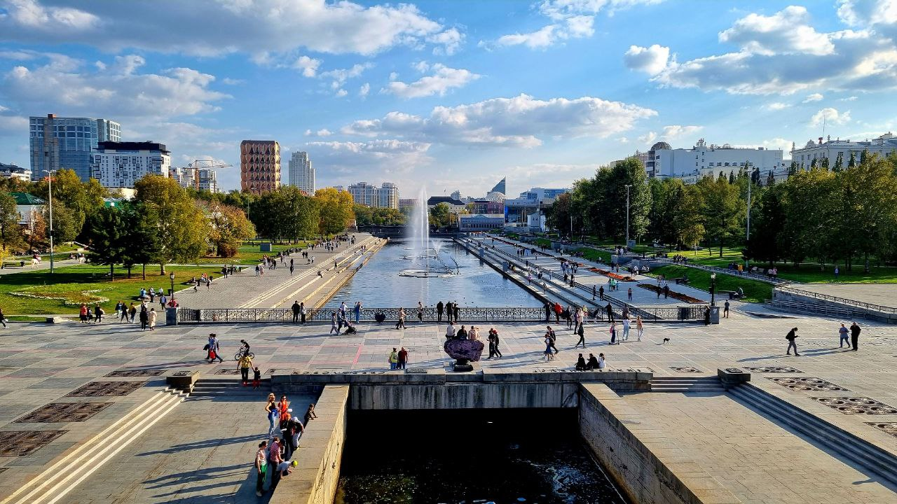
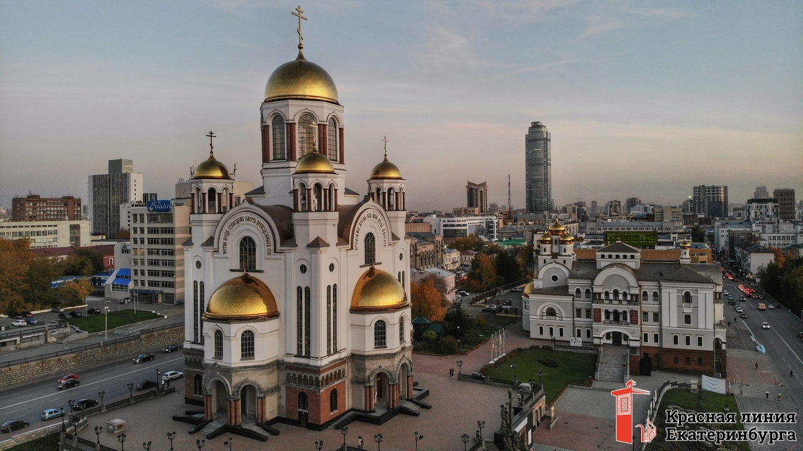
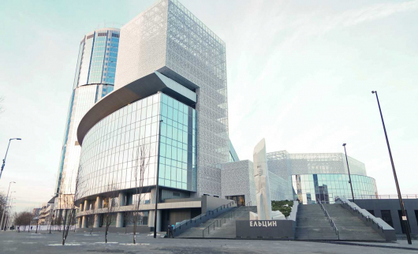
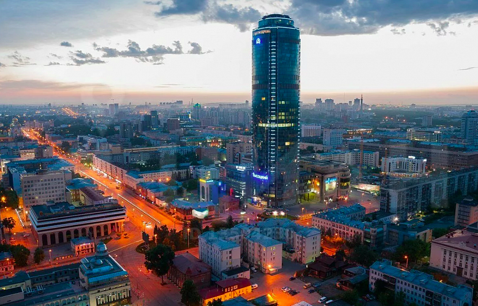

Сердце Екатеринбурга. Именно здесь началось строительство города-завода. Сейчас это любимое место прогулок горожан и туристов.

Построен на месте расстрела царской семьи. Один из самых известных храмов России, символ трагической истории.

Современный музейный комплекс, посвящённый истории России и первому президенту. Здесь проходят выставки, лекции и кинопоказы.

Самое высокое здание в Екатеринбурге (188 м). На 52-м этаже находится смотровая площадка — оттуда видно весь город.